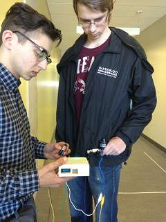

| As part of a four member product design group we worked to solve a problem relating to the elderly for a University of Waterloo design competition. At the end of a four month period we needed to present a functional prototype of our design. We decided to tackle a common problem of the elderly being stuck inside during the winter due to icy conditions and the fear of falling. Falling on ice can cause broken bones, mainly hips as well as other lower back injuries. To address this we create a jacket with an integrated accelerometer, compressed air canisters and an air bag. When the user fell the accelerometer was able to sense falling and puncture the air canisters to release the compressed air before the user hit the ground. During our final presentation we were awarded the top team for our design, we went above and beyond to try and incorporate our functional design into a high fidelity looks-like prototype. Based upon force testing we determined that our solution to this problem was sucvcessful and would reduce injuries from falling by 75% if the fall occured on the hips or lower back area. |  |